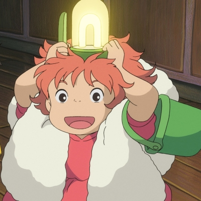
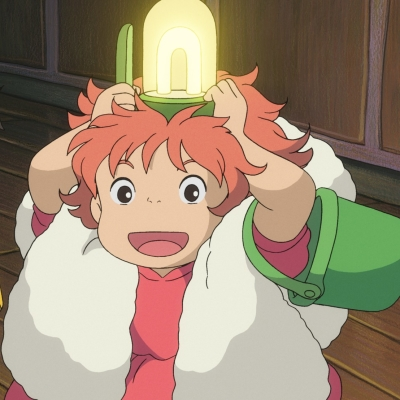

Ponyo adalah film fantasi animasi Jepang tahun 2008 yang ditulis dan disutradarai oleh Hayao Miyazaki. Film ini diproduksi oleh Studio Ghibli dan didistribusikan oleh Toho. Cerita berpusat pada Ponyo, seekor ikan mas yang melarikan diri dari lautan dan dibantu oleh seorang bocah manusia berusia lima tahun bernama Sōsuke. Setelah terdampar di pantai dalam sebuah botol kaca, Ponyo membentuk ikatan dengan Sōsuke dan berkeinginan menjadi seorang gadis manusia.
Film ini mendapat pujian dari para kritikus karena tema yang menginspirasi, desain visualnya, dan daya tarik bagi penonton segala usia. “Ponyo” juga menjadi sukses komersial dengan pendapatan lebih dari $204 juta di seluruh dunia dan menjadi film anime dengan pendapatan tertinggi kedelapan sepanjang masa. Versi berbahasa Inggris dari film ini juga dirilis di Amerika Serikat pada tahun 2009.
Pesan moral dari film “Ponyo” adalah tentang keberanian, persahabatan, dan keseimbangan alam. Sosuke, seorang anak berusia 5 tahun, menemukan seekor ikan mas yang terperangkap dalam sebuah toples di pantai. Ikan itu adalah Ponyo. Meskipun Ponyo awalnya hanya seekor ikan, Sōsuke merawatnya dengan penuh kasih sayang dan memberinya nama. Ketika Ponyo menginginkan untuk menjadi manusia, Sosuke mendukungnya dan berusaha membantunya mencapai tujuannya. Pesan moral di sini adalah tentang menerima perbedaan dan berani membantu orang lain bahkan ketika situasinya tidak biasa.
Film ini menyoroti dampak tindakan manusia terhadap alam. Ponyo dan Sosuke harus berjuang untuk mengembalikan keseimbangan alam yang terganggu oleh polusi dan tindakan manusia. Pesan moralnya adalah tentang perlunya menjaga alam dan lingkungan agar kehidupan tetap harmonis.
 
